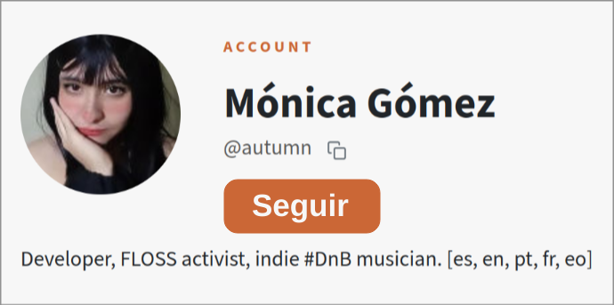
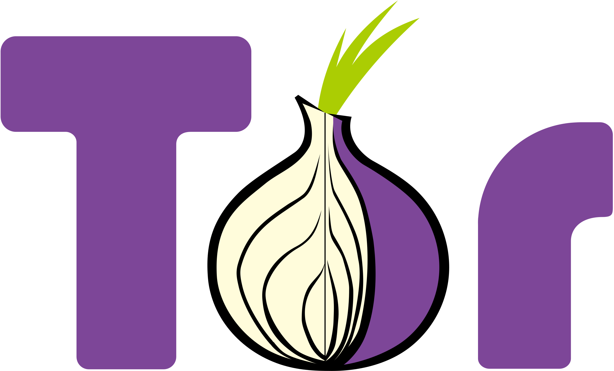
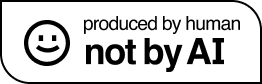
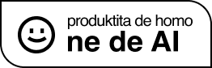

EL LOG DE AUTUMN
Este sitio es 100% compatible con LibreJS
Mis redes sociales
Sobre mí
Mi música
La Tienda de Autumn
Mi Codeberg
El Lab de Autumn
¡Cómprame un café!
Últimos videos
Para ver los últimos videos, ve a
https://www.autumn64.xyz/

Escucha
亚洲 Radio
online
Todas estas fotos provienen del
sitio web de la FSF
y están licenciadas bajo la CC BY.

 